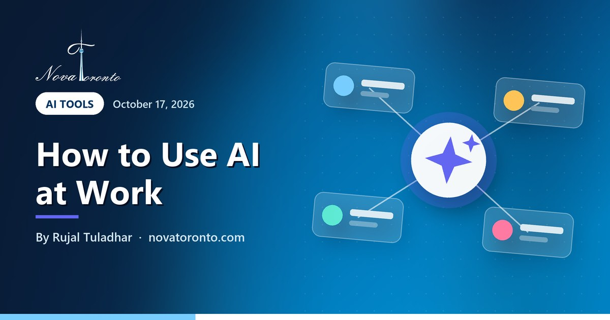

How to use AI at work: two small business workflows you can copy
Published October 17, 2026 • By Rujal Tuladhar

Most advice about AI at work is either too vague ("use ChatGPT to save time") or built for big companies with IT departments. A small business owner needs something more concrete: which tasks to hand over, which tools to use and where to stay careful.
The short interview above shows two example workflows. To be clear up front: Zara and Naomi are AI-generated characters that we created for Nova Toronto to illustrate these ideas. They are not real people, not our clients and not testimonials. Zara runs a small marketing studio downtown; Naomi runs a home bakery in Scarborough. Their setups are realistic and easy to copy, so this post breaks each one into steps, names tools that can do the job, and flags the Canadian privacy points to respect. We checked every product feature and rule below against the official pages on October 17, 2026.
Drafts, then your edit
AI writes the first draft of emails and proposals; you make it sound like you
Meeting notes
Record the call, get a summary and a to-do list, with everyone told
Product copy and photos
Descriptions, captions and images, checked so they stay honest
Phone assistant
Answers routine order questions when your hands are busy
Privacy first
Tell people when you record, and keep client data out of free tools
How to use AI at work: two small business workflows you can copy at a glance — the short version.
Workflow 1: AI drafts the email, you make it sound like you
In the video, Zara says she uses AI to draft client emails and proposals in minutes, then edits them so they still sound like her. That second half is the important part. AI is very good at a first draft and very bad at knowing your client, your prices and your tone.
Here is how to set it up in an afternoon:
- Pick one assistant and stick with it for a month. ChatGPT, Claude and Gemini all handle this well; our comparisons of Claude vs ChatGPT and Gemini vs ChatGPT can help you choose.
- Write a short "about us" note once: what you sell, who you sell to, your usual price ranges and three phrases you would never say. Paste it at the top of each request, or save it in the tool's custom instructions.
- Give it real inputs: your bullet points from the call, the client's own email, your standard scope. The better the notes, the less editing.
- Edit every draft before it goes out. Check names, numbers, dates and anything promised. AI tools can state wrong details confidently.
- Save your best edited versions as templates, so the next draft starts closer to finished.
One privacy habit: leave out anything a client would not want shared, such as financial details or personal information about their customers, unless you are on a business plan whose data terms you have read.
Workflow 2: record the meeting, get the summary and to-do list
Zara calls meetings her biggest win: she records the call, AI gives her the summary and the to-do list, and nothing slips through. Many video-call tools now do this built in, so you may not need anything new.
Google Meet is a good example. Its "Take notes for me" feature captures meeting notes in Google Docs, and the notes include a summary of the main topics plus a next-steps section that lists actionable items and assigned tasks. Google says all participants are told notes are being taken and see a pencil icon, and the organizer gets an email with the notes shortly after the meeting. It needs an eligible Google Workspace edition or Google AI plan, and it supports one language at a time (Google Meet Help). We covered a recent change to how these notes are switched on in our post on Google Meet AI notes.
Consent matters here. Clients are people too, and recording them is collecting personal information. The Office of the Privacy Commissioner of Canada's guidance on recorded calls says an organization must inform the person that it is recording, state the purpose as clearly and narrowly as possible, and give them a choice about whether their voice is recorded (OPC: Recording of customer telephone calls). The guidance is written for phone calls, but the same habits work for video meetings. A simple line at the start does it: "I use an AI note-taker so I don't miss anything; the notes stay with us. Is that OK?" If someone says no, take notes by hand.
After the meeting, spend two minutes reading the to-do list and fixing anything the AI misheard before you send it to the client.
Workflow 3: product descriptions, captions and photos
Naomi says AI writes her product descriptions and Instagram captions, and makes product photos when she doesn't have time for a shoot. For a one-person shop, that is hours a week back.
Descriptions. If you sell on Shopify, the text generator is already in your admin. Shopify's help pages say Sidekick can write product descriptions, blog posts and store pages when you click the generate-text icon, and they add a fair warning: AI outputs can contain errors, so review anything a tool creates or changes (Shopify Help Center). For a bakery, give the tool the facts it cannot guess: ingredients, allergens, sizes, price, shelf life and pickup or delivery area. Then check those facts in the result line by line. An allergen mistake is a real safety problem, not a typo.
Captions. Ask for five short options in your voice for one photo, pick one, and edit it. Batch a week of captions in one sitting so you are not writing at 10 p.m.
Photos. AI images are great for backgrounds, seasonal banners and styling ideas. Be careful when an image shows the product itself. Canada's Competition Bureau states that under the Competition Act it is against the law to advertise or market something in a way that is false or misleading (Competition Bureau: Deceptive marketing practices). If a generated cake looks nothing like the cake a customer receives, that is a problem. A safer approach: photograph your real product on your phone and use AI only to clean up the background or lighting. Meta has said it adds "AI info" labels to images when people disclose they are AI-generated or when its systems detect industry-standard signals (Meta), so being upfront costs little.
Workflow 4: an AI phone assistant for when your hands are busy
The last example in the video: when Naomi is elbow-deep in dough and can't answer, an AI assistant answers the order questions for her. Most callers to a small food business ask the same things: are you open, do you have this today, can I order for Saturday, do you deliver to my area, is it nut-free.
An AI phone assistant answers those from information you give it, takes the caller's name, number and order details, and sends you a summary. Before you set one up:
- Write the answer sheet: hours, menu, prices, lead times, pickup address, delivery area and your allergen policy.
- Decide what it must not do: for example, never confirm a custom cake or promise an allergen-free product; it takes the details and you call back.
- Add a recording notice if calls are recorded or transcribed, following the same OPC guidance above: tell callers, say why, and offer another way to reach you.
- Test it yourself with awkward questions before customers hear it.
For the full picture, see our guides to AI receptionists for small business and whether customers mind talking to one.
Where to start this week
You do not need all four workflows at once. Pick the one that matches your biggest weekly time sink and run it for two weeks:
- Writing eats your evenings? Start with drafted emails, proposals or product descriptions.
- Meetings blur together? Turn on the note-taker in the video tool you already use, with consent.
- Missing calls while you work? Start with an AI phone assistant or a missed-call text-back.
A short privacy checklist applies to all of them. Canada's federal private-sector privacy law, PIPEDA, covers organizations that handle personal information in the course of a commercial activity, and the Privacy Commissioner says those businesses must follow ten fair information principles, including consent and identifying purposes; Alberta, British Columbia and Quebec have their own similar laws (OPC: PIPEDA in brief). In practice: know what each AI tool does with the data you put in, only collect what you need, and tell people when you record them. This is general information, not legal advice.
If you want more ideas, our list of business tasks to automate with AI and our free AI tools for small business are good next reads, and the free beginner AI course covers the basics in seven short lessons.
The bottom line
Using AI at work as a small business owner is less about fancy tools and more about handing over the repetitive first step: the first draft, the meeting notes, the caption, the routine phone question. You keep the final check. The Zara and Naomi examples are fictional, but each workflow runs on tools that exist today. If you would rather have it set up for you, Nova Toronto helps GTA businesses set up AI step by step, from Scarborough to downtown Toronto, including our AI receptionist service.
Common questions
Are Zara and Naomi real Nova Toronto customers?
No. Zara and Naomi are AI-generated characters we created for the video to illustrate two common workflows. They are not real people, clients or testimonials. The tools and steps described in this post are real and available today.
What is the easiest way for a small business owner to start using AI at work?
Start with first drafts: emails, proposals, product descriptions or captions. Give the AI your notes and facts, then edit the result yourself. It needs no setup beyond one AI assistant and saves time from the first day.
Do I need permission to record a client meeting for AI notes?
Tell people before you record. The Office of the Privacy Commissioner of Canada says organizations recording calls should inform the person, explain the purpose and give them a choice. Ask at the start of the meeting and take notes by hand if someone declines. This is general information, not legal advice.
Can I use AI-generated photos of my products?
Use them carefully. Canadian law prohibits false or misleading advertising, so an image should not make your product look different from what customers receive. Photograph the real product and use AI for backgrounds or lighting.
Want this working in your business?
Book a free 30-minute call and we'll map out which of these would actually save you time and win you customers.
Book a Free ConsultationNew to AI? Take our free 7-lesson AI course for beginners.
Sources: Google Meet Help: Take notes for me in Google Meet • Office of the Privacy Commissioner of Canada: Recording of customer telephone calls • Office of the Privacy Commissioner of Canada: PIPEDA in brief • Shopify Help Center: Generating text with Sidekick • Competition Bureau Canada: Deceptive marketing practices • Meta: Our approach to labeling AI-generated content and manipulated media